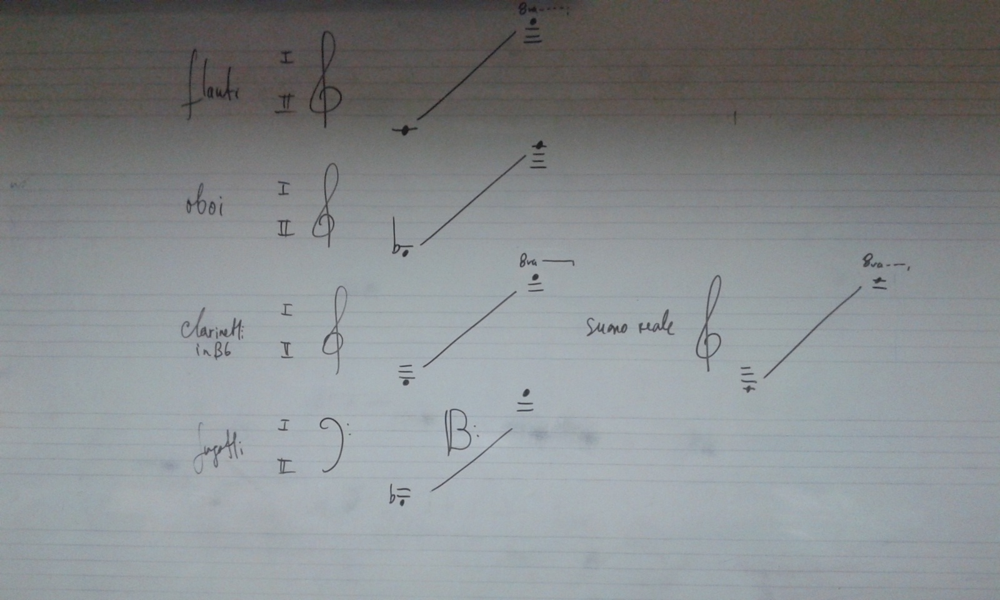

Orquestación
Clase 010

Maderas
proporciones dinámicas

"Los Pinos de Roma"(Fantasia 2000)
Ottorino Respighi
"Livyatanim "Myth"
película interactiva de Or Fleisher

"Musica Ricercata"
György Ligeti
Requisitos para 2da Evaluación
Conocimientos:
- Proporciones dinámicas, Rimsky-Korsakov.
Presentación de Tareas:
- Orquestación para sección de maderas de "Bagatella Op.6 n º 1", Bela Bartok.
Realización escrita:
- Orquestación de fragmento musical para sección de maderas.
010